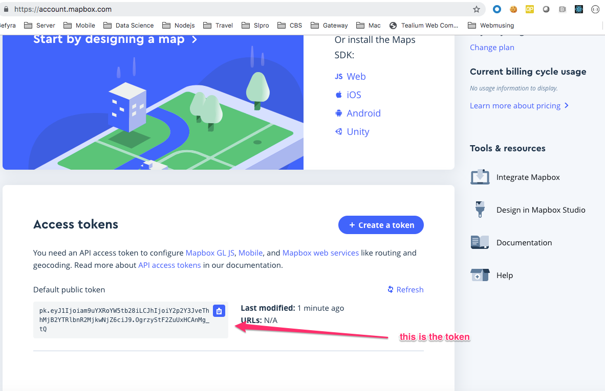

Objectives For Lesson 17.1
- Data Visualization With Leaflet
Why We Learn?
Geographical mapping is essential for all geo-location data. Especially when you're are working with a company which has international presence.
Examples
- https://carto.com/blog/understand-and-predict-zika-in-brazil/
- https://insights.spotify.com/us/2016/12/07/musical-map-of-the-world-2-0/
We'll be using Leaflet.js, and you should take a look at the docs to find out more: https://leafletjs.com/
Before We Begin:
Register a free account at https://www.mapbox.com. It gives live location data and it is needed within the activities.
After registration, grab your token form the page here:
01-Ins_Basic_Map
As we every new library, we need to reference them on our HTML page before we can use them. Place this in the head section of your document:
<link rel="stylesheet" href="https://unpkg.com/leaflet@1.4.0/dist/leaflet.css"
integrity="sha512-puBpdR0798OZvTTbP4A8Ix/l+A4dHDD0DGqYW6RQ+9jxkRFclaxxQb/SJAWZfWAkuyeQUytO7+7N4QKrDh+drA=="
crossorigin=""/>
Then, place the Leaflet Javascript file after Leaflet's CSS:
<!-- Make sure you put this AFTER Leaflet's CSS -->
<script src="https://unpkg.com/leaflet@1.4.0/dist/leaflet.js"
integrity="sha512-QVftwZFqvtRNi0ZyCtsznlKSWOStnDORoefr1enyq5mVL4tmKB3S/EnC3rRJcxCPavG10IcrVGSmPh6Qw5lwrg=="
crossorigin="">
Those are prerequisites before you can use the library. And just like any library, you'll need to place a div element with a certain id to render the map.
Hidden Div here:
In your activity, there is a config.js to store your MapBox token. Replace that token with your own.
Also, this is Leaflet's quickstart guide: https://leafletjs.com/examples/quick-start/
This is our initial code:
// Creating our initial map object
// We set the longitude, latitude, and the starting zoom level
// This gets inserted into the div with an id of 'map'
var myMap = L.map("map-01", {
center: [45.52, -122.67],
zoom: 13
});
// Adding a tile layer (the background map image) to our map
// We use the addTo method to add objects to our map
L.tileLayer("https://api.tiles.mapbox.com/v4/{id}/{z}/{x}/{y}.png?access_token={accessToken}", {
attribution: "Map data © <a href=\"https://www.openstreetmap.org/\">OpenStreetMap</a> contributors, <a href=\"https://creativecommons.org/licenses/by-sa/2.0/\">CC-BY-SA</a>, Imagery © <a href=\"https://www.mapbox.com/\">Mapbox</a>",
maxZoom: 18,
id: "mapbox.streets",
accessToken: API_KEY
}).addTo(myMap);
To create a map:
- Initialize the Map Object:
- L.map accepts 2 arguments:
- The first is the
idof the HTML element which Leaflet should insert the map into. - The second is an object containing initial options for the new map ("center" and "zoom" in this example).
- center is the latitude and longitude of what you want to project.
- Leaflet only helps to render the map and give it a space, but the actual map data comes from Mapbox, and it will come from the Tile Layer.
- Initialize the Tile Layer:
- This is the actual data itself, and it renders the map data into Leaflet.
- We configure the tile layer by:
- Passing in a formatted
queryUrlto thetileLayermethod. - Using the callback function
addTo, we place our map as an object in it. We'll invoke this method whenever we want to add something to a map. - The following map IDs are accessible to all accounts using a valid access token:
- mapbox.streets
- mapbox.light
- mapbox.dark
- mapbox.satellite
- mapbox.streets-satellite
- mapbox.wheatpaste
- mapbox.streets-basic
- mapbox.comic
- mapbox.outdoors
- mapbox.run-bike-hike
- mapbox.pencil
- mapbox.pirates
- mapbox.emerald
- mapbox.high-contrast
- Attribution is to give credits to where you are getting your map data.
Some things to note:
- Set your
divelement's height in your CSS or you won't see anything. - In your activity, it is set to
height: 100%;, but for my HTML it is set toheight:500px;.
02-Ins_Markers
Add markers AFTER rendering the map. They can be done separately.
// Create a new marker
// Pass in some initial options, and then add it to the map using the addTo method
var marker = L.marker([45.52, -122.67], {
draggable: true,
title: "My First Marker"
}).addTo(myMap);
// Binding a pop-up to our marker
marker.bindPopup("Hello There!");
Properties of the marker
- The latitude and longitude are placed in an array.
draggable: trueallows the marker to be dragged.marker.bindPopupallows text to indicate information when the marker is clicked.- Read the documentation for more info: https://leafletjs.com/reference-1.0.3.html#marker-option
You'll notice that without the Tiles Layer, markers can be placed independently. This is important for bug fixing.
Final Render
// Creating our initial map object
// We set the longitude, latitude, and the starting zoom level
// This gets inserted into the div with an id of 'map'
var myMap = L.map("map-02", {
center: [45.52, -122.67],
zoom: 13
});
// Adding a tile layer (the background map image) to our map
// We use the addTo method to add objects to our map
L.tileLayer("https://api.tiles.mapbox.com/v4/{id}/{z}/{x}/{y}.png?access_token={accessToken}", {
attribution: "Map data © <a href=\"https://www.openstreetmap.org/\">OpenStreetMap</a> contributors, <a href=\"https://creativecommons.org/licenses/by-sa/2.0/\">CC-BY-SA</a>, Imagery © <a href=\"https://www.mapbox.com/\">Mapbox</a>",
maxZoom: 18,
id: "mapbox.streets",
accessToken: API_KEY
}).addTo(myMap);
// Create a new marker
// Pass in some initial options, and then add it to the map using the addTo method
var marker = L.marker([45.52, -122.67], {
draggable: true,
title: "My First Marker"
}).addTo(myMap);
// Binding a pop-up to our marker
marker.bindPopup("Hello There!");
Hidden Div here:
03-Stu_City_Markers: Your Turn
04-Ins_Other_Markers
You can add other types of markers, and it uses SVG which you've learned to do that.
// Create a circle and pass in some initial options
L.circle([45.52, -122.69], {
color: "green",
fillColor: "green",
fillOpacity: 0.75,
radius: 500
}).addTo(myMap);
// Create a Polygon and pass in some initial options
L.polygon([
[45.54, -122.68],
[45.55, -122.68],
[45.55, -122.66]
], {
color: "yellow",
fillColor: "yellow",
fillOpacity: 0.75
}).addTo(myMap);
// Coordinates for each point to be used in the polyline
var line = [
[45.51, -122.68],
[45.50, -122.60],
[45.48, -122.70],
[45.54, -122.75]
];
// Create a polyline using the line coordinates and pass in some initial options
L.polyline(line, {
color: "red"
}).addTo(myMap);
// Create a rectangle and pass in some initial options
L.rectangle([
[45.55, -122.64],
[45.54, -122.61]
], {
color: "black",
weight: 3,
stroke: true
}).addTo(myMap);
Final Render:
// Create an initial map object
// Set the longitude, latitude, and the starting zoom level
var myMap = L.map("map-04").setView([45.52, -122.67], 13);
// Add a tile layer (the background map image) to our map
// Use the addTo method to add objects to our map
L.tileLayer("https://api.tiles.mapbox.com/v4/{id}/{z}/{x}/{y}.png?access_token={accessToken}", {
attribution: "Map data © <a href=\"https://www.openstreetmap.org/\">OpenStreetMap</a> contributors, <a href=\"https://creativecommons.org/licenses/by-sa/2.0/\">CC-BY-SA</a>, Imagery © <a href=\"https://www.mapbox.com/\">Mapbox</a>",
maxZoom: 18,
id: "mapbox.streets",
accessToken: API_KEY
}).addTo(myMap);
// Create a new marker
L.marker([45.52, -122.67]).addTo(myMap);
// Create a circle and pass in some initial options
L.circle([45.52, -122.69], {
color: "green",
fillColor: "green",
fillOpacity: 0.75,
radius: 500
}).addTo(myMap);
// Create a Polygon and pass in some initial options
L.polygon([
[45.54, -122.68],
[45.55, -122.68],
[45.55, -122.66]
], {
color: "yellow",
fillColor: "yellow",
fillOpacity: 0.75
}).addTo(myMap);
// Coordinates for each point to be used in the polyline
var line = [
[45.51, -122.68],
[45.50, -122.60],
[45.48, -122.70],
[45.54, -122.75]
];
// Create a polyline using the line coordinates and pass in some initial options
L.polyline(line, {
color: "red"
}).addTo(myMap);
// Create a rectangle and pass in some initial options
L.rectangle([
[45.55, -122.64],
[45.54, -122.61]
], {
color: "black",
weight: 3,
stroke: true
}).addTo(myMap);
Hidden Div here:
05-Stu_Other_Markers: Your Turn
06-Ins_City_Population
You can add visual proportions to the data using its size. One of the ways we can do it is through a circle marker's radius.
// Define a markerSize function that will give each city a different radius based on its population
function markerSize(population) {
return population / 40;
}
// Each city object contains the city's name, location and population
var cities = [
{
name: "New York",
location: [40.7128, -74.0059],
population: 8550405
},
{
name: "Chicago",
location: [41.8781, -87.6298],
population: 2720546
},
{
name: "Houston",
location: [29.7604, -95.3698],
population: 2296224
},
{
name: "Los Angeles",
location: [34.0522, -118.2437],
population: 3971883
},
{
name: "Omaha",
location: [41.2524, -95.9980],
population: 446599
}
];
// Loop through the cities array and create one marker for each city object
for (var i = 0; i < cities.length; i++) {
L.circle(cities[i].location, {
fillOpacity: 0.75,
color: "white",
fillColor: "purple",
// Setting our circle's radius equal to the output of our markerSize function
// This will make our marker's size proportionate to its population
radius: markerSize(cities[i].population)
}).bindPopup("<h1>" + cities[i].name + "</h1> <hr> <h3>Population: " + cities[i].population + "</h3>").addTo(myMap);
}
markerSize returns the proportions of the population by dividing it by 40.
Final Render:
// Create a map object
var myMap = L.map("map-06", {
center: [37.09, -95.71],
zoom: 5
});
L.tileLayer("https://api.tiles.mapbox.com/v4/{id}/{z}/{x}/{y}.png?access_token={accessToken}", {
attribution: "Map data © <a href=\"https://www.openstreetmap.org/\">OpenStreetMap</a> contributors, <a href=\"https://creativecommons.org/licenses/by-sa/2.0/\">CC-BY-SA</a>, Imagery © <a href=\"https://www.mapbox.com/\">Mapbox</a>",
maxZoom: 18,
id: "mapbox.streets-basic",
accessToken: API_KEY
}).addTo(myMap);
// Define a markerSize function that will give each city a different radius based on its population
function markerSize(population) {
return population / 40;
}
// Each city object contains the city's name, location and population
var cities = [
{
name: "New York",
location: [40.7128, -74.0059],
population: 8550405
},
{
name: "Chicago",
location: [41.8781, -87.6298],
population: 2720546
},
{
name: "Houston",
location: [29.7604, -95.3698],
population: 2296224
},
{
name: "Los Angeles",
location: [34.0522, -118.2437],
population: 3971883
},
{
name: "Omaha",
location: [41.2524, -95.9980],
population: 446599
}
];
// Loop through the cities array and create one marker for each city object
for (var i = 0; i < cities.length; i++) {
L.circle(cities[i].location, {
fillOpacity: 0.75,
color: "white",
fillColor: "purple",
// Setting our circle's radius equal to the output of our markerSize function
// This will make our marker's size proportionate to its population
radius: markerSize(cities[i].population)
}).bindPopup("<h1>" + cities[i].name + "</h1> <hr> <h3>Population: " + cities[i].population + "</h3>").addTo(myMap);
}
Hidden Div here:
07-Stu_Country_World_Cup: Your Turn
08-Ins_Layers
So far we've been only rendering a single map type (layer). It's possible to use multiple layers with the same map, and we toggle between them using layer control.
Leaflet has two types of layers:
- Base Layers: These are mutually exclusive where only one can be visible at a time. In our example, we have a light and dark theme.
- Overlays: It spreads a canvas over the base layers and can be turned off.
Layer groups
Supposed you have a bunch of layers you want to group together.
let littleton = L.marker([39.61, -105.02]).bindPopup('This is Littleton, CO.'),
denver = L.marker([39.74, -104.99]).bindPopup('This is Denver, CO.'),
aurora = L.marker([39.73, -104.8]).bindPopup('This is Aurora, CO.'),
golden = L.marker([39.77, -105.23]).bindPopup('This is Golden, CO.');
Instead of adding them one by one, you can do the following by using the LayerGroup class:
var cities = L.layerGroup([littleton, denver, aurora, golden]);
Final Render
// An array of cities and their locations
var cities = [
{
name: "Paris",
location: [48.8566, 2.3522]
},
{
name: "Lyon",
location: [45.7640, 4.8357]
},
{
name: "Cannes",
location: [43.5528, 7.0174]
},
{
name: "Nantes",
location: [47.2184, -1.5536]
}
];
// An array which will be used to store created cityMarkers
var cityMarkers = [];
for (var i = 0; i < cities.length; i++) {
// loop through the cities array, create a new marker, push it to the cityMarkers array
cityMarkers.push(
L.marker(cities[i].location).bindPopup("<h1>" + cities[i].name + "</h1>")
);
}
// Add all the cityMarkers to a new layer group.
// Now we can handle them as one group instead of referencing each individually
var cityLayer = L.layerGroup(cityMarkers);
// Define variables for our tile layers
var light = L.tileLayer("https://api.tiles.mapbox.com/v4/{id}/{z}/{x}/{y}.png?access_token={accessToken}", {
attribution: "Map data © <a href=\"https://www.openstreetmap.org/\">OpenStreetMap</a> contributors, <a href=\"https://creativecommons.org/licenses/by-sa/2.0/\">CC-BY-SA</a>, Imagery © <a href=\"https://www.mapbox.com/\">Mapbox</a>",
maxZoom: 18,
id: "mapbox.light",
accessToken: API_KEY
});
var dark = L.tileLayer("https://api.tiles.mapbox.com/v4/{id}/{z}/{x}/{y}.png?access_token={accessToken}", {
attribution: "Map data © <a href=\"https://www.openstreetmap.org/\">OpenStreetMap</a> contributors, <a href=\"https://creativecommons.org/licenses/by-sa/2.0/\">CC-BY-SA</a>, Imagery © <a href=\"https://www.mapbox.com/\">Mapbox</a>",
maxZoom: 18,
id: "mapbox.dark",
accessToken: API_KEY
});
// Only one base layer can be shown at a time
var baseMaps = {
Light: light,
Dark: dark
};
// Overlays that may be toggled on or off
var overlayMaps = {
Cities: cityLayer
};
// Create map object and set default layers
var myMap = L.map("map-08", {
center: [46.2276, 2.2137],
zoom: 6,
layers: [light, cityLayer]
});
// Pass our map layers into our layer control
// Add the layer control to the map
L.control.layers(baseMaps, overlayMaps).addTo(myMap);
Hidden Div here:
09-Stu_City_Population_Layers: Your Turn
10-Stu_Geo-Json: Your Turn
In this activity, we're plotting against earthquake occcurances, and this data comes from the government: https://earthquake.usgs.gov/fdsnws/event/1/query?format=geojson&starttime=2014-01-01&endtime=2014-01-02&maxlongitude=-69.52148437&minlongitude=-123.83789062&maxlatitude=48.74894534&minlatitude=25.16517337
Many times, geographical data is given to us and it's all about pulling from an existing dataset.
One of the easiest ways to deliver geographical data is via a format called GeoJSON. Instead of using the link above, you can take a look a the summarized version here: http://earthquake.usgs.gov/earthquakes/feed/v1.0/summary/all_hour.geojson
GeoJSON is an open standard format for representing simple geographical features, along with their non-spatial attributes using JSON.
- Features are represented by coordinates and can have other properties attached to them.
- The different types of features are:
- Point
- LineString
- Polygon
- MultiPoint
- MultiLineString
- MultiPologon
- We can feed the features data to the Leaflet
geoJSONmethod, and it will know what kind of marker it should make and where to place it. - If you take a look at the
featuresnode in the URL, you'll find many abbreviations that represent different things: - You can refer to the documentation here for reference: https://earthquake.usgs.gov/data/comcat/data-eventterms.php
- You don't have to memorize everything. For now, we only want the time and location of each earthquake.
Hint
- Render the map first in a function.
- Use the
featuresdata node as-is. There isn't a need to clean or make changes to the data itself for the markers to appear. - The cosmetic features are rendered in the
bindPopupmethod. - You can read more here for its documentation: https://leafletjs.com/reference-1.4.0.html#geojson
- Or you can look at the examples for inspiration: https://leafletjs.com/examples/geojson/